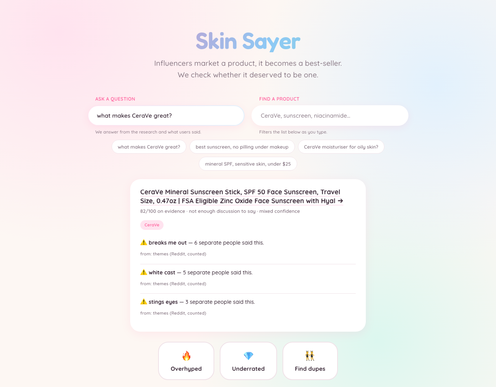

Technical interview guide — written against the running code and live databases, verified 2026-10-05. Every number here was queried, not recalled.
| Claim | Verified | Source of truth |
|---|---|---|
| Products ranked | 277 | SELECT COUNT(*) FROM rankings |
| Reddit comments embedded | 211,991 | Chroma reddit_comments.count() |
| PubMed chunks embedded | 268 | Chroma pubmed_abstracts.count() |
| Threads harvested | 10,481 | harvested_threads.db → seen |
| Products found for free | 1,468 mentions | discovered.db → mentions |
| Ingredient cache entries | 10 | memory.db |
| Ingredient cache reuses | 980 | SUM(hits) |
| Scrape cache entries | 601 | scrape_cache.db |
| Chroma on disk | 1.8 GB | du -sh data/chroma |
| Agent eval | 45/45 | eval/agent_eval_results.json |
| RAG faithfulness | 0.96 | eval/ragas_results.json |
| RAG answer relevancy | 0.747 | same |
| RAG context precision | 0.507 | same |
| RAG context recall | 0.317 | same |
Re-verify the morning of the interview:
cd ~/Downloads/true_products
.venv/bin/python -c "
import sqlite3, chromadb
print('products', sqlite3.connect('data/truth.db').execute(
'select count(*) from rankings').fetchone()[0])
print('reuses ', sqlite3.connect('data/memory.db').execute(
'select sum(hits) from ingredient_memory').fetchone()[0])
c = chromadb.PersistentClient(path='data/chroma')
for col in c.list_collections():
print(col.name, c.get_collection(col.name).count())
"ARCHITECTURE.md was written during an early run and never updated.
| Doc says | Reality | Off by |
|---|---|---|
| 32 products | 154 | ~5× |
| 122k comments | 211,991 | ~1.7× |
| 121 discovered products | 1,468 mentions | ~12× |
| 8 cached ingredients, 360 reuses | 10 cached, 980 reuses | ~2.7× |
| 36 scrape-cache entries | 601 | ~17× |
| faithfulness 0.875 | 0.96 | understated |
That reads as someone who checks their own claims, which is the trait being tested.
octocrylene 202 reuses
avobenzone 196
homosalate 196
octisalate 193
zinc oxide 97
titanium dioxide 57
oxybenzone 28
octinoxate 8
meradimate 3
ensulizole 0
───
980 total (10 cached entries → 98:1 amortisation)grep -rn "postgres\|psycopg\|asyncpg" --include="*.py" --include="*.toml" . --exclude-dir=.venv
# → zero matchesStorage is 5 SQLite databases + Chroma. Nothing else.
That is a better answer than having used Postgres unnecessarily.
ARCHITECTURE.md:99 states this. There is no counter, no
instrumentation, no commit recording before/after. What is verifiable:
22 ChatOpenAI(...) call sites across 17 files.
pyproject.toml, never imported
eval/ragas_eval.py reimplements the four metrics by hand. The
docstring explains why: RAGAS 0.2–0.4 all import
langchain_community.chat_models.vertexai, a module path removed
in langchain-community v1.
score_row."
No pytest, no conftest.py, no .github/workflows, no
Dockerfile. The four scripts/test_*.py files are manual API
probes — they hit live endpoints and print results, with no assertions.
eval/agent_eval.py — 45 assertions over the deterministic
components, where correctness is actually checkable. It works as a regression
suite and it encodes two production bugs as permanent cases. But it isn't
pytest, it doesn't run in CI, and the LLM nodes aren't covered."
Own this. Claiming tests you don't have is the most checkable lie available.
Defensible only if "agent" means "an LLM call that makes a judgement". Most
are single structured-output calls, not tool-calling loops.
Exactly one true agent exists — dermatology.py, built with
create_agent and bound to 3 tools.
That precision earns credit. Calling 14 classifiers "14 agents" loses it.
| File | Status |
|---|---|
api/main.py | Local dev — imports data.db, full project |
api_vercel/index.py | PRODUCTION — raw SQL, minimal imports |
The thesis, in one line: marketing makes people buy a product — does it actually work?
For every product, three questions:
Then the finding:
hype gap = what Amazon rank implies − what the evidence supportsA real row from truth.db:
Neutrogena Ultra Sheer SPF 70
Amazon rank #4
evidence score 53.8
hype gap +43.2 ← overhypedWEEKLY BATCH JOB (slow, writes) THE WEBSITE (instant, reads)
───────────────────────────── ───────────────────────────
Firecrawl → Amazon best-sellers FastAPI on Vercel
↓ rank, price, image, title ↓
openFDA drug label → INCI api_vercel/index.py
Open Beauty Facts → INCI (fallback) ↓ raw SQL, read-only
↓ truth.db (154 rows)
LangGraph: orchestrator → router ↓
→ dermatology (1 agent, 3 tools) JSON → single-page frontend
→ safety veto (openFDA)
→ ranking → confidence
↓
truth.db ◄── the ONLY thing the site reads
SEPARATE, AHEAD OF DEMAND
─────────────────────────
6 subreddits × 5 listings → 10,481 threads → 211,991 comments → Chromadata/db.py:8):
the weekly job WRITES here. the website only READS here.
api/main.py's docstring forbids
importing graph; (2) api_vercel/index.py physically
cannot — it has almost no project imports; (3) Vercel's filesystem is
read-only, so writes are impossible.
One deliberate exception: /api/recalls hits openFDA live.
The reason is in the code — a week-old "no recalls" for a product recalled
yesterday is the worst failure this system could ship. Caching is an
optimisation, and optimisations don't get to touch the safety veto.
| Data | TTL | Why |
|---|---|---|
| Ingredients | 90 days | Reformulation is a rare event |
| 14 days | Comments accumulate over weeks | |
| Product detail | 7 days | Price moves; images and claims don't |
| Best-seller rank | never cached | It's the hype signal, moves weekly, cheapest call we make |
| Recalls | never cached | See above — this is the veto |
Simple version: a flowchart where each box is a Python function, and they all read and write one shared dictionary.
Technical version: a directed graph of nodes (functions
state → partial state) and edges (what runs next). Each
node returns only the keys it changed; LangGraph merges that into the shared
state. Edges are either fixed (add_edge) or computed by a
routing function (add_conditional_edges).
START
↓
orchestrator ← LLM: parse query → category
↓
route_to_expert() ← conditional edge: DICT LOOKUP, no LLM
┌──────────────┼──────────────┐
dermatology nutrition food
(the one agent) (stub) (stub)
└──────────────┼──────────────┘
↓
safety ← openFDA. ALWAYS runs. No LLM.
↓
safety_veto() ← conditional edge
┌────────┴────────┐
flag_avoid rank ← arithmetic
│ ↓
│ confidence ← LLM, with deterministic shortcuts
└────────┬────────┘
ENDThree structures a linear pipeline cannot express:
dermatology — an auditor re-runs the researcher when citations are missing. That's a cycle.flag_avoid, skipping scoring entirely.if
somebody can forget."
class TruthState(TypedDict, total=False):
product: Product # input
user_query: str
category: str # orchestrator writes
filters: dict
expert_findings: str # dermatology writes
sources: list[dict]
evidence: Annotated[list[Evidence], operator.add] # ← see below
is_safe: bool # safety writes
safety_notes: str
score: float # ranking writes
subscores: dict
hype_gap: float
verdict: str
themes: list[dict]
skin_types: list[dict]
confidence: Literal["strong", "mixed", "insufficient"]Annotated[list[Evidence], operator.add]
BRANCHES = {"skincare": "dermatology", "supplement": "nutrition", "food": "food"}
DEFAULT_BRANCH = "dermatology"
def route_to_expert(state: TruthState) -> str:
category = (state.get("category") or "").lower().strip()
return BRANCHES.get(category, DEFAULT_BRANCH)for pass_number in range(MAX_REFLECTIONS): # MAX_REFLECTIONS = 2
reflection = _reflect(product["name"], findings)
if reflection.is_sufficient or not reflection.follow_up_queries:
break # early exit
follow_up = f"""Your analysis has gaps. Close them.
GAPS: {chr(10).join('- ' + g for g in reflection.gaps)}
Run these searches and revise: {', '.join(reflection.follow_up_queries[:3])}
Return the COMPLETE revised analysis, not just the new part."""
result = agent.invoke({"messages": [...prior..., follow_up]})
findings = result["messages"][-1].contentThe auditor is forced into a schema so the loop condition can't be fuzzy prose:
class Reflection(BaseModel):
is_sufficient: bool
gaps: list[str] # specific uncited claims
follow_up_queries: list[str] # PubMed searches that would close themrange(MAX_REFLECTIONS) — at most 2 extra passes, always.is_sufficient or no follow-up queries → break.RAG (Retrieval-Augmented Generation): instead of relying on what a model memorised in training, you retrieve relevant documents first and paste them into the prompt, so the answer is grounded in text you control.
Three reasons a plain LLM call is not good enough here — each fatal alone:
rag/store.py the citation metadata travels with the chunk — that's what makes grounding enforceable rather than aspirational.A labelled medical abstract looks like this:
BACKGROUND: Sunscreen use is widespread...
METHODS: 24 volunteers applied 2mg/cm² four times daily...
RESULTS: Oxybenzone plasma levels reached 258 ng/mL... ← the answer
CONCLUSIONS: Absorption exceeds the FDA threshold...def _split_abstract(abstract: str) -> list[str]:
return [line.strip() for line in abstract.split("\n") if line.strip()]Interview theory, not implemented: fixed-size chunking with overlap (e.g. 512 tokens, 50 overlap) is the generic default. I didn't need it because abstracts are pre-segmented. Overlap exists to stop a sentence being split mid-idea; section boundaries are already idea boundaries.
ids.append(f"{paper['pmid']}::{i}") # pmid + section index
collection.upsert(ids=ids, ...) # upsert, not addRe-running the weekly job updates rather than duplicating. add would have crashed on a repeat.
hits.sort(key=lambda h: (h["evidence_strength"], h["similarity"]), reverse=True)| Study design | Weight |
|---|---|
| Meta-analysis / Systematic review | 5 |
| Randomised controlled trial / Phase III | 4 |
| Clinical trial (Phase I–II) | 3 |
| Observational study / Review | 2 |
| Case report / Journal article | 1 |
Real retrieval, run live:
Q: "Does oxybenzone absorb into the bloodstream from sunscreen use?"
[PMID 31058986] sim=0.666 strength=4 ← ranked FIRST
[PMID 33706185] sim=0.603 strength=4
[PMID 31961417] sim=0.597 strength=4
Q: "Does aluminium in antiperspirant cause breast cancer?"
[PMID 37354712] sim=0.734 strength=5 ← ranked first despite LOWER sim
[PMID 39795956] sim=0.772 strength=2 than the 0.772 hit below it
[PMID 38173070] sim=0.755 strength=2Same library, same embedding model, completely different job.
| PubMed RAG | Reddit RAG | |
|---|---|---|
| Query is | a question | a name |
| You want | the answer | the neighbourhood |
| Returns | 5 | ~120 |
| Its output is | used directly | only a proposal |
| Min similarity | none | 0.35 |
| Expiry | never | 120 days |
tools/reddit.py opens with an argument against vector
search on Reddit:rag/comments.py does vector search on Reddit anyway.
Keying on the brand name missed everything that didn't spell it out:
"the elta clear one" → EltaMD UV Clear
"TJ's spf" → Trader Joe's
"that korean rice sunscreen" → Beauty of Joseon_add(retrieve(brand, product_name, n_results=30)) # 1. direct
_add(retrieve(brand, "", n_results=30)) # 2. brand alone
for concern in get_category(category)["common_concerns"]:
_add(retrieve(brand, concern, n_results=12)) # 3-7. concern-ledFor sunscreen the concerns are ['white cast', 'pilling', 'greasy', 'stings eyes', 'breakouts'].
_client_lock = threading.Lock()
_collection = None
def get_collection():
global _collection
if _collection is not None:
return _collection
with _client_lock:
if _collection is None: # another thread may have won the race
client = chromadb.PersistentClient(path=str(DB_PATH))
_collection = client.get_or_create_collection(...)
return _collection
refresh/harvest.py does not search per product. It opens 6
subreddits × 5 listing/window combinations (hot/all,
new/all, top/year, top/month,
top/all), following Reddit's after cursor for 10
pages each, and banks every comment ≥60 characters regardless of what it's about.
searched one product → 6 comments → "white cast (2 people)"
pulled from the pool → 47 comments → "white cast (14), pills (9), stings (5)"IDs are SHA1 content hashes, so re-scraping a thread is a no-op rather than a duplicate.
~120 candidates (7 embedding queries, ≥0.35 similarity, <120 days old)
↓
comment_router "is this about OUR product — and if not, whose?"
↓
comment_matcher strict: same brand ≠ same product
↓
shill_detect weight by specificity (does not delete)
↓
~47 approved
├─→ SCORE: sort by weight × upvotes → top 12 → one number
├─→ THEMES: count ALL 47 → repeats only → top 5
└─→ SKIN TYPES: grouped, including rescued comments
The old version kept KNOWN_BRANDS. It didn't contain "biossance",
so a comment praising biossance inside a Supergoop thread counted as
Supergoop sentiment. Maintaining a list of every skincare brand on
earth is not a plan — new ones appear weekly and the misses are silent.
So an agent answers two questions per comment:
thread: "Supergoop Unseen -- thoughts?"
comment: "its so good, helped my skin"
→ about Supergoop. Names nothing; the THREAD supplies the subject.
comment: "I loveeee the biossance sunscreen, on my second tube"
→ NOT Supergoop. About biossance. Bank it there.discovered.db comes from: 1,468 mentions of products
the community discusses that Amazon's best-seller list never surfaced."
"Great sunscreen, highly recommend, love the finish!" → weight 0.4
"pills under my foundation after about 4 hours,
and it stings if I sweat" → weight 1.0The point survives, but state it precisely:
| Ranked by | Gameable? | |
|---|---|---|
| The naive version | similarity to the query | Yes — write comments that sound like it |
| What the code does | weight × upvotes | No — specificity + community agreement |
if reddit["comment_count"] == 0:
return None, "Nobody on Reddit has discussed this product."
# ↑ None, NOT 50 — the caller drops the dimension and renormalises
if reddit["comment_count"] < 5:
score = 50 + (score - 50) * 0.5 # damp toward neutral
note += " Few comments, so this signal is damped toward neutral."| Database | Purpose | Live scale |
|---|---|---|
truth.db | Serving table. 34 columns, 3 indexes. The site reads only this. | 154 rows |
memory.db | Research keyed by ingredient, not product | 10 rows, 980 hits |
scrape_cache.db | Tiered TTLs (90d / 14d / 7d) | 601 entries |
harvested_threads.db | Which threads are banked, so a 20-hour harvest resumes | 10,481 |
discovered.db | Products the community discusses that Amazon doesn't rank | 1,468 mentions |
comment_pool.db | Legacy brand-keyed pool — superseded, effectively dead | — |
| Chroma | 2 collections: pubmed_abstracts, reddit_comments | 268 / 211,991 |
| SQLite | Chroma | |
|---|---|---|
| Answers | "which rows match exactly?" | "which text means something similar?" |
| Query | WHERE price < 20 | query_texts=["CeraVe"] |
| Index | B-tree | HNSW over cosine distance |
| Used for | serving the site | retrieval during the batch job |
def init_db() -> None:
with get_connection() as conn:
conn.executescript(SCHEMA)
existing = {row[1] for row in conn.execute("PRAGMA table_info(rankings)")}
for column, sql_type in expected.items():
if column not in existing:
conn.execute(f"ALTER TABLE rankings ADD COLUMN {column} {sql_type}")
print(f" [db] added missing column: {column}")CREATE TABLE IF NOT EXISTS does not add columns to an
existing table. I added a column to the schema, and every database created
before that change kept its old shape — so every INSERT failed with 'no such
column'. A 31-minute run over 20 products produced zero rows and the job
reported success. The fix is a hand-rolled migration: create, then reconcile
actual columns against expected ones. It's what a migration framework would do,
minus the framework."
| Dimension | Measurable? | Result |
|---|---|---|
| Outcome | Yes — known-correct answers exist | 31/31 |
| Tool use | Yes — calls typed, results structured | 7/7 |
| Trajectory | Partially — graph path is determined; the agent's internal tool order is not | 7/7 |
| Planning | No — not scored | reported as unscorable |
There are exactly 17 FDA-approved UV filters and zinc oxide is a mineral one. No model is consulted:
{"name": "handles descriptor-prefixed filters",
"run": lambda: analyse_ingredients_raw(
["Non-Nano Uncoated Zinc Oxide 25%", "Beeswax"])["filter_type"],
"expect": "mineral"}
{"name": "does NOT infer skin type from a complaint",
"run": lambda: detect_skin_type("this is greasy"),
"expect": ""} # ← a texture report is not a skin-type declaration{"name": "openFDA treats 'no matches' as empty, not an error",
"run": lambda: check_recalls_raw("zzzznotarealbrand"),
"expect": []} # openFDA returns HTTP 404 for "nothing found"
{"name": "openFDA survives reserved characters in a brand",
"run": lambda: isinstance(check_recalls_raw("Supergoop!"), list),
"expect": True} # "!" broke Lucene query syntax("no path skips safety",
not any(t in ("rank", "confidence")
for src, t in edges if src != "safety" and src != "rank"))It introspects the compiled graph's edge set. The safety veto cannot be bypassed by a refactor without this failing.
| Metric | Score | What it measures |
|---|---|---|
| Faithfulness | 0.96 | Is every claim in the answer supported by the retrieved context? |
| Answer relevancy | 0.747 | Does the answer address the question asked? |
| Context precision | 0.507 | Of what we retrieved, how much was useful? |
| Context recall | 0.317 | Did we retrieve what was needed? |
It deliberately includes questions where the honest answer is no:
And ones where the answer is "partially" or "unresolved" — those catch a model that likes to be decisive.
Q: Does oxybenzone absorb into the bloodstream?
A: "Yes... can be detected in human plasma following application."
faithfulness 1.0 relevancy 1.0 precision 1.0 recall 0.5
Q: Does aluminium in antiperspirant cause breast cancer?
A: "...does not provide definitive evidence... While some studies suggest
potential concerns... the overall consensus is no causal link."
faithfulness 1.0 relevancy 1.0 precision 0.8 recall 0.0
Q: Does azelaic acid treat rosacea?
A: "Yes, particularly papulopustular rosacea... 15% gel significantly
reduces inflammatory lesion counts."
faithfulness 1.0 relevancy 1.0 precision 1.0 recall 1.0
Q: Are silicones such as dimethicone comedogenic?
A: "The provided research passages do not specifically address this.
Therefore, I cannot provide an answer."
faithfulness 1.0 relevancy 0.2 ← SAME ANSWER, OPPOSITE VERDICTSNote the judge prompt scores "the context does not answer this" as 1.0 faithful — the "no research ≠ bad" rule encoded into the metric.
Also worth knowing: the aluminium row scores recall 0.0 with a good answer, because the ground truth says "reviews found no link" while the strongest retrieved chunk said "better to avoid Al-containing antiperspirants". The context genuinely didn't contain the ground truth. That's correct measurement, not a broken retriever.
Two layers, both deterministic — regex and string checks, never an LLM judging an LLM.
| Layer | Catches | Example |
|---|---|---|
| Input | Prompt injection | ignore all previous instructions |
| Medical advice | is this safe while pregnant | |
| Off-domain | what laptop should I buy | |
| Overlong input | >500 chars — the usual vehicle for a buried injection | |
| Output | Unsupportable safety claims | is completely safe, no health risk |
| Advice, not synthesis | you should stop using | |
| Ungrounded assertion | claims contains/absorbs/causes with zero evidence recorded |
def check_verdict(verdict: str, evidence: list[dict]) -> tuple[bool, list[str]]:
asserts_fact = re.search(r"\b(contains|absorbs|blocks|causes|prevents)\b", lowered)
if asserts_fact and not evidence:
problems.append(f"Verdict asserts {asserts_fact.group(0)!r} "
"but no evidence was recorded.")
return (not problems), problemsWEIGHTS = {"expert": 0.45, "sentiment": 0.35, "efficacy": 0.20}
# Safety is NOT here. An unsafe product does not get to average its way back up.And a failed check is never reported as safe:
except RuntimeError as exc:
return {"is_safe": True, # let it through rather than falsely flagging
"safety_notes": f"Safety status UNKNOWN -- could not reach openFDA ({exc}). "
"This is not a clean safety record; it is a failed check."}
/api/ask turns a shopper's question into an answer assembled
entirely from stored columns. No LLM on the request path.
"what makes CeraVe great?" → specific: one product's evidence
"best sunscreen non greasy on makeup" → comparative: ranked, filtered catalogue
"what laptop should i buy" → declined: off-domainThe vocabulary is closed — six skin types, five concerns, five categories. That's what regex is for. A model that can invent a seventh skin type is strictly worse than a dict that cannot.
The logic was initially copy-pasted into api_vercel/index.py,
because .vercelignore excluded tools/ and
pipeline/ wholesale. 18 modules in tools/ genuinely
are heavy (LangChain, Chroma, OpenAI, PRAW) — but the serving code isn't.
Fix: a serving/ package holding only pure-stdlib modules, which
both API entry points import. 318 lines of duplication removed. And because a
rule nothing checks is a comment, the eval suite enforces it:
{"name": "serving package stays dependency-free (Vercel-deployable)",
"run": lambda: _serving_is_pure(), # AST-walks every import in serving/
"expect": True}
{"name": "both API layers share one answer implementation",
"run": lambda: (api_vercel.index.answer_question is serving.answer_question),
"expect": True}from tools... for convenience, the eval fails here instead of the
Vercel build failing at deploy time."

Verified in a real browser via scripts/browser_check.py —
Playwright drives the page, asserts the answer card renders for four question
shapes, and fails on any console error. Note the source attribution
under every line.
| # | Bug | Root cause | Why it was invisible |
|---|---|---|---|
| 1 | Three unrelated Chroma errors | PersistentClient built from 4 threads |
Three different exceptions from one cause — looked like three bugs |
| 2 | "Nobody discusses this product" for products with hundreds of comments | Pooled comments banked without thread_title |
Every component worked correctly. The router needs the title to resolve "it", so it rightly rejected them |
| 3 | Biossance praise counted as Supergoop sentiment | Hardcoded KNOWN_BRANDS list missing entries |
Silent — no error, just wrong attribution averaged into a score |
| 4 | 31-minute run produced zero rows | CREATE TABLE IF NOT EXISTS doesn't add columns |
Job reported success |
| 5 | Every clean product looked like a failed safety check | openFDA returns HTTP 404 for "no matches" | 404 looks like an error, is actually a valid empty result |
| 6 | 3 of 4 products lost their ingredients | Rate limiting | A rate-limited lookup is indistinguishable from "genuinely not found" |
| 7 | Skin-type filter accepted clicks and did nothing | Backfill passed [] where marketing claims go |
Empty list is a valid value — 85% of rows silently untagged |
types = marketed_for(name or "", []) # ← claims thrown away
The live pipeline passes claims correctly; only the backfill didn't. Fixing one
line took tagging coverage from 23 → 73 products (15% → 47%). The
Neutrogena row had "Non-comedogenic sunscreen: free of oil, oxybenzone, and
PABA, in a non-greasy lotion" sitting in its claims column —
non-comedogenic was already a pattern in the matcher and never
reached it.
memory.db keys silently.gpt-4o-mini is hardcoded in 17 files.truth.db and discovered.db — the same product could appear twice under different ASINs.| Not demonstrated | What to say |
|---|---|
| Unit tests / pytest / CI | "No test suite. I have 45 deterministic eval assertions instead, which cover the checkable parts but aren't the same thing and don't run in CI." |
| Containers / Docker | "Deployed as a Vercel Python function, not a container. I haven't containerised this." |
| GPU optimisation | "Not applicable — I call hosted APIs, I don't serve models. No experience to claim here." |
| Distributed systems | "Single-process with a 4-worker thread pool. The concurrency bug I hit was real but local, not distributed." |
| Model serving / fine-tuning | "I integrate models, I don't serve or train them." |
| Horizontal scaling | "Never needed — it's a weekly batch job and a static read. I can describe how I'd scale it, but I haven't." |
| Monitoring / alerting | "LangSmith tracing when a key is set. No metrics, no alerts, no dashboards." |
| Postgres / pgvector | "Didn't use it. SQLite was right for a single-writer batch pipeline." |
| Requirement | Evidence in this project |
|---|---|
| Evaluation pipelines | Two suites. 45 deterministic agent assertions + 30-question RAG eval with four metrics, hand-implemented. Encodes real bugs as regression cases. |
| Model integration | 22 LLM call sites, structured outputs via Pydantic, one tool-calling agent, bounded reflection. |
| Data pipelines | 6 sources → 6 databases + 2 vector collections. Tiered caching by volatility, resumable 20-hour harvest. |
| Production-facing AI | Deployed and live. Read/write separation enforced architecturally, not by convention. |
| Failure analysis | Seven real bugs with root causes; two encoded as permanent tests. |
| Observability | LangSmith with per-run metadata (brand, ASIN, rank) so a bad verdict maps to its exact trace. |
| Interpretability | Every claim carries a PMID or recall number. The Q&A UI prints the source column under each sentence. |
What is a StateGraph, and why not a plain Python pipeline?
A graph of functions sharing a typed state dict, with edges that can be
conditional. I needed it for three things a chain can't do: a cycle
(the reflection loop re-runs the researcher when citations are missing),
conditional routing (category → expert branch), and a veto (a
recall diverts to flag_avoid, skipping scoring entirely). The
veto being a graph edge rather than an if is what lets me
test that no path skips safety — my eval introspects the compiled edge
set.
Follow-up: "Why not CrewAI?" → "CrewAI models a crew of role-playing agents collaborating. I have one real agent and a lot of deterministic machinery. I wanted explicit control flow I could draw and test, not emergent delegation. CrewAI would have made my strongest property — that the safety gate can't be bypassed — impossible to assert."
How do you prevent hallucination?
Four layers, and only the first is prompting:
Follow-up: "What's left?" → "The 0.04. Typically a date or percentage the model knows from training leaking into an otherwise grounded answer. And my auditor is itself an LLM — I'd want a deterministic citation-presence check as a backstop."
How do you stop irrelevant Reddit comments?
Three filters after retrieval. A router asks which product each comment is about — and if it's a different one, names it, which is where 1,468 discovered mentions come from. A matcher is strict about the common failure: same brand, different formula. "Neutrogena Hydro Boost" tells you nothing about "Neutrogena Ultra Sheer", and that's the most common way wrong sentiment enters a score invisibly. Then weighting by specificity.
Follow-up: "Why not just a similarity threshold?" → "I have one, at 0.35, but it only establishes 'this is in the neighbourhood'. Similarity can't distinguish 'I love this' from 'better than this' — one is a review, the other is praise for a rival. That needs judgement."
Why two vector stores instead of one with metadata filtering?
Because they're used differently, not just filtered differently. PubMed
retrieval is re-ranked by study design and its output goes straight into a
prompt. Reddit retrieval returns ~120 candidates that are only proposals
— they go through three filters and the score is computed over survivors. They
also have different TTLs (never vs. 120 days) and different similarity floors.
One collection with a source filter would work mechanically, but
it would hide that these are two different algorithms.
Follow-up: "Would you merge them now?" → "No. If anything the separation should be stronger — the Reddit store should probably be sharded by subreddit, since 212k vectors in one HNSW index is where query latency starts mattering."
Your relevancy score is only 0.747. Why?
Because I chose it. When my corpus doesn't cover a question, the model says "the passages don't address this" — perfectly faithful, scores 0.2 on relevancy. One answer, two opposite verdicts. I could push relevancy to 0.95 by letting it answer unsourced, and ship fabricated health claims on a shopping site. The honest read is grounding is strong, coverage is uneven — and the fix is corpus breadth, not prompt engineering.
Follow-up: "How would you fix coverage?" → "CORE_RESEARCH is eight sunscreen topics warming the corpus, against a gold set spanning retinoids, acids and rosacea. Widening that list is the highest-leverage change and it doesn't touch retrieval code. I'd also add per-question recall logging so I know which topics are thin rather than inferring it."
What was the hardest bug?
Use bug #2 from §11 — the missing thread_title. It's the best story because every component was behaving correctly.
Follow-up: "How would you catch that class of bug earlier?" → "It was invisible because 'zero relevant comments' is a valid state — niche products genuinely have none. What I'd add is a distribution check: if the router's rejection rate jumps above some threshold across the whole catalogue, that's a pipeline bug, not a property of the products. I was monitoring per-product outcomes when I should have been monitoring the aggregate."
What is deterministic vs. LLM-controlled, and why?
| Deterministic | Why |
|---|---|
| Router | Dict lookup. A model that can hallucinate a route is worse than a dict that cannot. |
| Safety gate | One REST call. This is the veto; it must never depend on model discretion. |
| UV filter identification | 17 FDA-approved filters — a closed set with one right answer per molecule. |
| Score arithmetic | Same inputs, same answer, instantly, free. |
| Guardrails | A guardrail a model can argue past is not a guardrail. |
| Question parsing | Closed vocabulary — six skin types, five concerns. |
The principle: models for judgement, lookup tables for facts.
How would you scale this to 100,000 products?
Say what exists first: single process, 4-worker pool, ~90s per product, SQLite, one Chroma instance.
Then the bottlenecks in order:
time.sleep(20) between products, which is honest but crude.Follow-up: "What would you do first?" → "Instrument. I don't currently measure per-node latency or token counts, so I'd be optimising from intuition. LangSmith gives me traces but I'm not aggregating them."
What would you change today?
What did you personally own?
All of it — it's a solo project. Which cuts both ways: no code review, so the design decisions are mine and so are the gaps. The parts I'd most want reviewed are the scoring weights (0.45/0.35/0.20 is judgement, not derived) and the decision to treat Amazon reviews as a labelled fallback at 0.4× weight, which I went back and forth on.
Why TypedDict for state rather than a Pydantic model or a dataclass?
LangGraph's merge semantics work on dicts — a node returns a partial dict and the framework merges it. TypedDict gives static type checking with zero runtime cost and stays a plain dict. A Pydantic model would validate on every node transition, which I don't need since nodes are my own code, and would break the partial-return pattern.
Follow-up: "Where do you use Pydantic?" → "At every model boundary — Reflection, QueryPlan, RoutedComment, ConfidenceCall. That's where validation earns its keep, because the input is model output I don't control. Internal state is my own code; external output is not."
What does total=False do on your TypedDict?
Makes every key optional. Essential here — nodes fill fields progressively, so a state mid-graph legitimately lacks score and confidence. Without it every node would have to construct a complete state.
Why global in get_collection()? Isn't that a smell?
It's module-level memoisation of a resource that must be a singleton per process. The alternatives are a class with a classmethod (same thing, more ceremony) or functools.lru_cache — which would work but hides that this is a deliberate singleton and makes the locking harder to see. Here the global plus explicit lock makes the concurrency contract visible.
You catch bare Exception in several places. Defend that.
Every instance is at a boundary where failure must not kill a 20-hour run, and each one is annotated. refresh/run.py: one bad product must not end the batch. rag/comments.py: a scrape failure degrades sentiment to unknown rather than crashing. They're all paired with a # noqa: BLE001 and a comment saying why. Where I don't do it is the safety path — openFDA failure raises RuntimeError deliberately, because silently swallowing it would mean a product with an unknown safety status looking clean.
Why lazy imports inside functions?
Two reasons. Import cost — api/main.py only pays for tools.recall_feed when /api/recalls is hit. And circular-dependency avoidance: ranking.py imports from graph.nodes.theme_research, which imports rag.store. Hoisting those to module level creates cycles.
How do you handle secrets?
python-dotenv loads .env, which is in both .gitignore and .vercelignore. load_dotenv() is called before any os.getenv — in refresh/run.py the ordering is explicit with a comment, because importing a module that reads env at import time before loading the file silently yields None.
What is an embedding, concretely?
A fixed-length list of floats representing text, positioned so that similar meanings land near each other. text-embedding-3-small produces 1,536 dimensions. "The elta clear one" and "EltaMD UV Clear" end up close despite sharing almost no characters — that's the entire reason I use it instead of string matching.
Why text-embedding-3-small and not -large?
Cost, at 212,000 comments. Small is 1,536 dimensions against large's 3,072 — roughly 5× cheaper and half the storage. The retrieval task here is "is this comment about this product", which is coarse. I'd reconsider for the research corpus, where distinguishing nuanced claims matters more and the volume is 268 chunks rather than 212k.
Follow-up: "How would you know if that was wrong?" → "I'd need retrieval metrics I don't currently have — Recall@K against a labelled set of comment/product pairs. That's an honest gap: I evaluate the RAG end-to-end but never retrieval in isolation."
What is HNSW?
Hierarchical Navigable Small World — the approximate-nearest-neighbour index Chroma uses. A multi-layer graph where upper layers are sparse for long jumps and lower layers dense for precision. Approximate, so it trades a small amount of recall for enormous speed; exact search over 212k vectors would mean 212k distance computations per query.
You set hnsw:space: cosine at creation. What if you wanted to change it?
You can't — it's fixed at collection creation and changing it requires rebuilding. At 212k comments that's a full re-embed. It's the kind of parameter worth getting right up front, and a reason to store the embedding model version in metadata too, which I don't currently do.
What's Recall@K and MRR, and why don't you report them?
Recall@K: of all genuinely relevant documents, what fraction appear in the top K. MRR (Mean Reciprocal Rank): the average of 1/rank of the first relevant result — rewards putting the right answer first.
I don't report either because both need a labelled set: "for this query, these are the relevant documents." I never built one. I evaluate the RAG end-to-end via context precision and recall, which are LLM-judged proxies. That's a real gap — a labelled retrieval set would let me tune top-k and the similarity threshold empirically instead of by feel.
What happens if a tool raises inside the agent loop?
LangChain catches it and returns the error as the tool result, so the model sees it and can adapt — often by retrying with different arguments. That's why my tools raise informative errors rather than returning None: the message becomes the model's input. The exception is openFDA, which is deliberately outside the agent entirely.
How do you make agent behaviour deterministic?
Three ways. temperature=0 everywhere. Structured outputs, so the shape can't vary even when wording does. And the big one — keeping most decisions out of the model: routing is a dict, filter identification is a set, scoring is arithmetic, guardrails are regex. The genuinely non-deterministic surface is small.
Follow-up: "Is temperature 0 actually deterministic?" → "No. It makes sampling greedy but doesn't guarantee identical output — floating-point non-determinism in batched GPU inference means the same prompt can produce different tokens. For anything that must be reproducible I don't rely on the model at all. That's partly why the ingredient cache matters: it makes the research step reproducible by not re-running it."
Difference between an agent and a workflow?
A workflow has a path fixed in advance by the author. An agent decides its own path at runtime. My system is mostly workflow with one agentic node — and that's the design, not a limitation. The research step genuinely varies per product; routing to the dermatology branch does not.
Difference between orchestration and tool calling?
Orchestration is deciding which component runs next — my graph edges do that, mostly deterministically. Tool calling is a model deciding which function to invoke within a node. I separated them deliberately: the orchestrator identifies a category but does not choose the branch; a dict does. If both made the same decision I'd have two sources of truth and one would be wrong.
Where's the human in the loop?
Nowhere at runtime — it's a batch job writing to a database. The human loop is at development time: I read verdicts, find the bad ones, trace them in LangSmith, fix the prompt. For a production system making consequential claims I'd want review before publish, at minimum on low-confidence verdicts. Not implemented.
Define faithfulness mathematically.
Of the claims in the answer, the fraction entailed by the retrieved context. Formally: |claims supported by context| / |claims in answer|. In practice an LLM judge decomposes the answer and checks each claim, because automatic claim decomposition and entailment are themselves hard problems.
Your context precision is 0.507. Isn't that bad?
It means roughly half of what I retrieve is useful for the question. The cause is a fixed n_results=5 with no relevance floor on the research side, so thin-coverage questions pad with marginal chunks. Two fixes: a similarity threshold like the Reddit side has, or a reranker model. I'd try the threshold first — it's free. But note precision and recall trade off: raising the threshold would push recall below 0.317.
Why is context recall only 0.317?
Coverage, not retrieval quality. CORE_RESEARCH warms the corpus with eight sunscreen topics while the gold set spans retinoids, acids, ceramides and rosacea. Several questions have little or no corresponding content — silicones and comedogenicity returns 0.0 precision and 0.0 recall, meaning nothing relevant came back at all. And one row is correct measurement: on aluminium, my ground truth says "reviews found no link" while the strongest retrieved chunk said "better to avoid". The context genuinely didn't contain the ground truth.
Could your agent eval pass trivially?
Fair challenge, and partly yes — several cases test a lookup table against itself, which is close to tautological. What saves it: the guardrail cases test real regex against real adversarial strings; the tool cases make live API calls and encode two bugs that actually broke production; and the trajectory check introspects the compiled graph, so a refactor that broke the safety invariant would fail it. The weakest cases are the filter-identification ones. The strongest is the one asserting no graph path skips safety.
How do you know your eval isn't overfit to your own system?
I don't, fully. The gold set is questions my pipeline actually asks, written from published literature — which makes it realistic but also self-selected. An honest improvement would be sourcing questions from real user queries once I have them, and having a second person write ground truths. Single-author ground truth is a genuine methodological weakness and I'd rather name it than defend it.
What happens if Amazon changes its page structure?
Firecrawl returns nothing and the job falls back to Apify. If both fail, load_live returns an empty list and prints the recovery command. The real risk isn't a hard failure — it's a partial one where the selector still matches but returns garbage. I don't validate scraped output against a schema, which is a gap.
Why Firecrawl primary and Apify fallback, when Apify came first?
Apify hit a monthly hard limit mid-run and silently zeroed the data. The job completed, reported success, and produced nothing. Anything with a failure mode that looks like success does not belong on the critical path, so it got demoted to fallback and the keyless option was promoted.
How does the 20-hour harvest resume?
harvested_threads.db stores every permalink already banked — 10,481 rows. Before processing a thread the harvester checks membership. The check is read-only and separate from the marking step, so a crash mid-thread re-processes that thread rather than skipping it, and the content-hash IDs make the re-write a no-op.
You bank every comment over 60 characters. Isn't that wasteful?
Deliberately so. Storage and embedding at -small are cheap; the expensive thing is a scrape I have to repeat. A comment about a product I haven't ranked yet is worthless today and valuable the moment that product enters the catalogue — which is exactly what the 1,468 discovered mentions are. Filtering at ingest would mean guessing now what I'll need later.
This is a solo project with no users. Why should I believe it works?
You shouldn't take my word for it — that's why there are numbers. 45 deterministic assertions over components with known-correct answers, a RAG eval on 30 questions, and a browser test that drives the real page and fails on any console error. I can run all three in front of you. What I can't claim is that users find the verdicts useful, because there aren't enough users to say.
Isn't a 0.45 weight on "expert mentions" arbitrary?
Yes. It's judgement ordered by how hard each signal is to fake, not derived from data. I'd want to validate against held-out human preference and I haven't. The thing I'd defend is the structure rather than the constants — safety as a veto rather than a weight, rank excluded entirely, and missing dimensions dropped rather than defaulted.
You scrape Reddit and Amazon. Is that allowed?
Reddit's public JSON endpoints with throttling, which is the documented interface. Amazon via Firecrawl, which is a grey area — their ToS restricts scraping, and a commercial version would need the Product Advertising API. Worth being straight about: it's fine for a personal research project and would need changing before it was a business.
What's the weakest part of this system?
Three candidates, and I'd pick the second. (1) Context recall at 0.317 — but I know the cause and the fix. (2) No test suite, so every refactor is checked by eval assertions that cover maybe a third of the code. (3) Scoring weights are unvalidated judgement. The second is weakest because it's the one that will bite someone else maintaining this.
If you started over, what would you do differently?
Instrument from day one. Every number I'd want to quote — cost per product, latency per node, LLM calls before and after batching — I either don't have or can't defend, because I added caching and batching without measuring the before. The ingredient cache is the exception, and only because hits happened to be in the schema. That's why I can say "980 reuses" with confidence and can't say "47 to 25 calls" at all.
An interviewer will use the word loosely. Be precise, because the distinction is load-bearing in this codebase.
| Agent-callable tool | Pipeline function | |
|---|---|---|
| Decorated with | @tool (LangChain) | nothing — plain Python |
| Who decides to call it | the model | my code |
| Arguments come from | model output, validated against the signature | the caller |
| Count here | 7 defined, 3 actually bound | ~30 modules |
@tool decorator, but only three are
bound to the agent. The other four are decorated so they could be
exposed, and are currently called deterministically by nodes instead. If
someone asks how many tools my agent has, the answer is three — and I'd
rather say that than inflate it, because a tool the model never sees isn't a
tool, it's a function."
@tool functions| Tool | Module | Bound to agent? | Returns |
|---|---|---|---|
analyse_ingredients | tools/ingredient.py:156 | YES | Filter type, flagged, irritants |
search_research | tools/pubmed.py:176 | YES | Abstracts + PMIDs, design-weighted |
check_ingredient_fear | tools/fear_check.py:111 | YES | A common fear, to test against evidence |
check_fda_recalls | tools/openfda.py:92 | no — node calls it | Recalls with enforcement numbers |
reddit_sentiment | tools/reddit.py:352 | no — node calls it | Comments, astroturf-weighted |
lookup_fda_ingredients | tools/fda_ingredients.py:298 | no — resolver calls it | INCI from the drug-label filing |
lookup_openbeautyfacts | tools/openbeautyfacts.py:120 | no — resolver calls it | INCI for non-drug cosmetics |
check_fda_recalls is decorated, but the safety node calls
check_recalls_raw() directly. If it were a tool, the model would
decide whether to check for recalls. It must run for every product,
every time, with no discretion. Making it a graph node rather than a tool is
what turns "the model usually checks" into "the check cannot be skipped".
def _build_agent():
model = ChatOpenAI(model="gpt-4o-mini", temperature=0)
return create_agent(
model=model,
tools=[analyse_ingredients, search_research, check_ingredient_fear],
system_prompt=SYSTEM_PROMPT,
)What happens under that one call, step by step:
search_research(query: str) becomes {"name": "search_research", "parameters": {"query": {"type": "string"}}}.tools field. That is literally how the model "knows which tools exist" — they are in the prompt payload, not trained in.{"name": "search_research", "arguments": {"query": "zinc oxide broad spectrum"}}.analyse_ingredientsThe design decision that matters most here is what it refuses to do.
"""INCI (ingredient list) analysis -- pure local logic, no network calls.
This is deliberately OUR OWN CODE and never an external API.
Commercial ingredient APIs sell you a "safety score" or a "comedogenicity
rating". Those are somebody's *opinion* dressed up as data -- and comedogenicity
ratings in particular come mostly from 1970s rabbit-ear studies that correlate
poorly with human skin. If we piped those into our ranking we'd be reselling a
black box while telling users we rank by what's actually true.
So we only extract things that are OBJECTIVELY CHECKABLE from the label:
- is this filter mineral or chemical? (a fact about the molecule)
- is oxybenzone present? (a fact about the list)
- is fragrance present? (a fact about the list)
Interpretation -- "is that bad?" -- is left to the research tools."""MINERAL_FILTERS = {"zinc oxide", "titanium dioxide"}
CHEMICAL_FILTERS = {
"avobenzone", "oxybenzone", "octinoxate", "octisalate", "octocrylene",
"homosalate", "ensulizole", "meradimate", "padimate o",
"sulisobenzone", "trolamine salicylate",
}
This is why it is not an agent. The FDA approves exactly 17 UV filters.
It is a closed set with one correct answer per molecule. A model could
hallucinate an eighteenth; a set cannot.
FLAGGED_INGREDIENTS = {
"homosalate": (
"The EU restricted homosalate to 7.34% in face products in 2022 over "
"endocrine concerns; the US still permits up to 15%."
),
"oxybenzone": (
"Banned in Hawaii and Key West over coral-reef concerns; the FDA's "
"2019-2020 MUsT studies found it absorbs into the bloodstream above "
"the threshold at which further safety testing is required."
),
}def _normalise(ingredient: str) -> str:
cleaned = ingredient.lower().strip()
# Drop parenthetical notes: "titanium dioxide (nano)" -> "titanium dioxide"
if "(" in cleaned:
cleaned = cleaned.split("(")[0]
# Drop a trailing concentration: "avobenzone 3%" -> "avobenzone".
# Note the number comes BEFORE the % sign, so splitting on "%" alone
# leaves "avobenzone 3" and nothing matches.
cleaned = re.sub(r"\s*[\d.]+\s*%?\s*$", "", cleaned)
return cleaned.strip(" .,*")Line by line:
.lower().strip() — labels are inconsistently cased.split("(")[0] — "Titanium Dioxide (nano)" must match "titanium dioxide". The nano/non-nano distinction is real but belongs in research, not identification.re.sub(r"\s*[\d.]+\s*%?\s*$", "", ...) — the bug worth telling. The obvious fix is split("%")[0], which turns "avobenzone 3%" into "avobenzone 3" — and that matches nothing. The number precedes the percent sign, so the digits must be stripped too. Silent failure: every concentration-bearing label returned filter_type: unknown..strip(" .,*") — labels end with asterisks and commas.search_research (PubMed)EVIDENCE_RANK = {
"Meta-Analysis": 5, "Systematic Review": 5,
"Randomized Controlled Trial": 4, "Clinical Trial, Phase III": 4,
"Clinical Trial, Phase II": 3, "Clinical Trial, Phase I": 3,
"Clinical Trial": 3,
"Observational Study": 2, "Review": 2,
"Case Reports": 1, "Journal Article": 1,
}
pub_types = [p.text for p in article.findall(".//PublicationType") if p.text]
strength = max((EVIDENCE_RANK.get(pt, 0) for pt in pub_types), default=0)
max(...) because PubMed tags a paper with several types at once —
a meta-analysis is also a "Journal Article". Taking the max gives the paper
credit for its strongest classification. default=0 handles types
not in the table, which sort last.
if not abstract:
continue # no abstract -> nothing to ground a claim in, so skip itcheck_fda_recalls: the safety gateThree defensive decisions in forty lines. All three came from real failures.
def _sanitise(brand: str) -> str:
"""Strip characters that break openFDA's Lucene query syntax.
"Supergoop!" returns HTTP 400 because `!` is a reserved operator. A crash
here means NO RECALL CHECK RAN, so this must never be left to chance.
"""
for char in '!:()[]{}^"~*?\\/&|+-':
brand = brand.replace(char, " ")
return " ".join(brand.split())! is a reserved operator.
'Supergoop!' returned a 400 and the safety check silently didn't run. The
danger isn't the crash — it's that a failed safety check and a clean safety
check look identical downstream unless you're careful. That's now a permanent
eval case."
if response.status_code == 404:
return [] # no matches -- the good case
response.raise_for_status()try:
response = requests.get(ENFORCEMENT_URL, params=params, timeout=15)
except requests.RequestException as exc:
# A network failure is NOT the same as "no recall". Say so loudly --
# silently returning "safe" here would be the worst bug in the system.
raise RuntimeError(f"openFDA request failed for {brand!r}: {exc}") from excAnd the node that catches it refuses to lie:
except RuntimeError as exc:
return {
"is_safe": True, # let it through rather than falsely flagging it
"safety_notes": (
f"Safety status UNKNOWN -- could not reach openFDA ({exc}). "
"This is not a clean safety record; it is a failed check."
),
}is_safe: True — I won't falsely flag a
product because my network failed, since that would be defamatory to a brand
that did nothing wrong. But the note says, in those words, 'this is not a
clean safety record; it is a failed check.' The distinction between
'checked and clean' and 'could not check' is the entire point, and it's
visible to the reader rather than buried."
lines.append(
f"The FDA recorded a recall ({r.get('recall_number')}, {classification}: "
f"{meaning}) for {r.get('recalling_firm')} on ..."
)strength use max() over publication types?is_safe: True?The blocks most likely to be opened in an interview. Read the code, then the annotation under it.
graph/build.pybuilder = StateGraph(TruthState)
builder.add_node("orchestrator", orchestrator_node)
builder.add_node("dermatology", dermatology_node)
builder.add_node("safety", safety_node)
builder.add_node("rank", ranking_node)
builder.add_node("confidence", confidence_node)
builder.add_node("flag_avoid", flag_avoid_node)
builder.add_edge(START, "orchestrator")
builder.add_conditional_edges(
"orchestrator",
route_to_expert, # ← returns a STRING
{"dermatology": "dermatology", # ← string → node name
"nutrition": "nutrition", "food": "food"},
)
builder.add_edge("dermatology", "safety") # every branch
builder.add_edge("nutrition", "safety") # converges on
builder.add_edge("food", "safety") # safety
builder.add_conditional_edges(
"safety", safety_veto, {"rank": "rank", "flag_avoid": "flag_avoid"}
)
builder.add_edge("rank", "confidence")
builder.add_edge("confidence", END)
builder.add_edge("flag_avoid", END) # flagged skips scoring
return builder.compile()StateGraph(TruthState) — the TypedDict is the schema every node reads and writes.add_conditional_edges(source, fn, mapping) — fn returns a string; the mapping turns it into a node. The indirection means routing logic is a testable pure function, not buried in graph wiring.add_edge(branch, "safety") lines are the architecture. There is no path from any expert to rank. Safety is unavoidable by construction.add_edge("flag_avoid", END) — a recalled product never reaches scoring. It cannot average its way back up..compile() — validates the graph (unreachable nodes, missing targets) and returns a runnable. graph = build_graph() at module import; it's stateless and safe to reuse.if somebody might forget to write — it's a
property of the graph's shape, and my eval asserts it by introspecting the
compiled edge set."
graph/state.pyfrom typing import Annotated
import operator
evidence: Annotated[list[Evidence], operator.add]What it does:
# WITHOUT the annotation (default behaviour — last write wins):
dermatology returns {"evidence": [A, B]} → state["evidence"] == [A, B]
safety returns {"evidence": [C]} → state["evidence"] == [C] ✗ lost
# WITH Annotated[..., operator.add]:
dermatology returns {"evidence": [A, B]} → state["evidence"] == [A, B]
safety returns {"evidence": [C]} → state["evidence"] == [A, B, C] ✓dermatology.py:190for pass_number in range(MAX_REFLECTIONS): # ① hard cap = 2
reflection = _reflect(product["name"], findings) # ② audit
if reflection.is_sufficient or not reflection.follow_up_queries:
break # ③ early exit
print(f" [derm] gap found, research pass {pass_number + 2}: {reflection.gaps}")
follow_up = f"""Your analysis has gaps. Close them.
GAPS: {chr(10).join('- ' + g for g in reflection.gaps)}
Run these searches and revise: {', '.join(reflection.follow_up_queries[:3])}
Return the COMPLETE revised analysis, not just the new part.
If a gap cannot be closed because the research does not exist, say so explicitly."""
result = agent.invoke({"messages": [ # ④ full prior context
{"role": "user", "content": prompt},
{"role": "assistant", "content": findings},
{"role": "user", "content": follow_up},
]})
findings = result["messages"][-1].contentrange(2). Not a while with a counter — the bound is structural."Return the COMPLETE revised analysis" exists because without it the model returned only the new paragraph and the original was lost."Note that 'there is insufficient evidence' is a complete answer, NOT a gap."
rag/comments.py:60_client_lock = threading.Lock()
_collection = None
def get_collection():
global _collection
if _collection is not None: # ① fast path, no lock
return _collection
api_key = os.getenv("OPENAI_API_KEY")
if not api_key:
raise RuntimeError("OPENAI_API_KEY is required to embed comments.")
with _client_lock: # ② only contended on first call
if _collection is None: # ③ re-check inside the lock
DB_PATH.mkdir(parents=True, exist_ok=True)
client = chromadb.PersistentClient(path=str(DB_PATH))
_collection = client.get_or_create_collection(
name=COLLECTION,
embedding_function=embedding_functions.OpenAIEmbeddingFunction(
api_key=api_key, model_name="text-embedding-3-small"
),
metadata={"hnsw:space": "cosine"}, # ④
)
return _collectionThis is double-checked locking. Each line earns its place:
hnsw:space: cosine — cosine distance, set at creation. It cannot be changed later without rebuilding the collection.Cosine measures the angle between vectors — direction only, magnitude ignored. Euclidean measures straight-line distance, so magnitude counts.
For text embeddings, magnitude correlates with length, not meaning. A 40-word comment and a 400-word comment making the same point have similar direction but very different magnitude. Under Euclidean, the long one looks far away. Under cosine, they match.
rag/comment_themes.pydef gather_all_comments(brand, product_name, category="sunscreen") -> list[dict]:
seen: set[str] = set()
candidates: list[dict] = []
def _add(results: list[dict]) -> None:
for r in results:
key = r["text"][:200] # ① dedupe on content prefix
if key not in seen:
seen.add(key)
candidates.append(r)
_add(retrieve(brand, product_name, n_results=PER_QUERY)) # ② direct
_add(retrieve(brand, "", n_results=PER_QUERY)) # ③ brand alone
for concern in get_category(category)["common_concerns"]: # ④ concern-led
if len(candidates) >= MAX_CANDIDATES: # ⑤ cost bound
break
_add(retrieve(brand, concern, n_results=12))
return candidates[:MAX_CANDIDATES]MAX_CANDIDATES = 120 bounds cost: every candidate eventually costs a share of an agent call.ranking.pyWEIGHTS = {"expert": 0.45, "sentiment": 0.35, "efficacy": 0.20}
subscores = {"efficacy": _score_efficacy(findings, category)}
if expert_pts is not None:
subscores["expert"] = expert_pts # only if a derm actually wrote
sentiment_score, sentiment_note = _score_sentiment(reddit)
if sentiment_score is not None:
subscores["sentiment"] = sentiment_score # only if anyone discussed it
usable = {k: w for k, w in WEIGHTS.items() if k in subscores}Worked example — a product nobody has discussed and no dermatologist mentioned:
subscores = {"efficacy": 70}
usable = {"efficacy": 0.20}
score = (70 × 0.20) / 0.20 = 70 ← judged on what we measured
# The naive alternative (filling gaps with 50):
score = 70×0.20 + 50×0.35 + 50×0.45 = 54 ← dragged to the middle by
two dimensions we never measuredguardrails.pyUNSUPPORTABLE_CLAIMS = [
r"\bis\s+(completely\s+|totally\s+|perfectly\s+)?safe\b",
r"\b(is|are)\s+(proven|guaranteed)\s+safe\b",
r"\bno\s+(health\s+)?risk\b",
r"\bcauses\s+cancer\b", # never assert; attribute or omit
r"\bwill\s+(cure|prevent|treat)\b",
r"\byou\s+should\s+(stop|avoid)\s+using\b", # advice, not synthesis
]
def check_verdict(verdict: str, evidence: list[dict]) -> tuple[bool, list[str]]:
problems = []
lowered = verdict.lower()
for pattern in UNSUPPORTABLE_CLAIMS:
match = re.search(pattern, lowered)
if match:
problems.append(
f"Unsupportable claim: {match.group(0)!r}. "
"State what was looked for and not found instead."
)
asserts_fact = re.search(r"\b(contains|absorbs|blocks|causes|prevents)\b", lowered)
if asserts_fact and not evidence:
problems.append(
f"Verdict asserts {asserts_fact.group(0)!r} but no evidence was recorded."
)
return (not problems), problemsTwo different checks:
causes cancer is banned in both directions: asserting harm without attribution is fear-mongering, which is hype pointed backwards.And it returns problems rather than rewriting: "We do not auto-rewrite -- that hides the failure. We surface it so the problem gets fixed in the prompt that produced it."
data/cache.pyTTL_DAYS = {"ingredients": 90, "reddit": 14, "detail": 7}
def get(kind: str, identifier: str):
key = f"{kind}::{identifier}".lower()
ttl = TTL_DAYS.get(kind, 7) * 86400
with _connect() as conn:
row = conn.execute(
"SELECT payload, fetched_at FROM scrape_cache WHERE key = ?", (key,)
).fetchone()
if not row:
return None
payload, fetched_at = row
if time.time() - fetched_at > ttl:
conn.execute("DELETE FROM scrape_cache WHERE key = ?", (key,)) # ①
return None
conn.execute("UPDATE scrape_cache SET hits = hits + 1 WHERE key = ?", (key,)) # ②
return json.loads(payload)hits is what produced the "980 reuses" number. Instrumentation built into the cache rather than bolted on, which is why that figure is defensible and "47→25 LLM calls" isn't.get_collection()?Annotated[list[Evidence], operator.add] change?_normalise use a regex instead of split("%")?get_collection() simultaneously."Interviewers chain why three or four deep. Each answer below gives what the repo does first, then the reasoning you can defend. Where a motivation is inferred rather than documented, it says so.
Why LangGraph?
Repo: graph/build.py compiles a StateGraph
with 2 conditional edges and a cycle inside dermatology.
Why: three things a chain can't express — a loop, conditional
routing, and a veto that skips downstream nodes. And because the graph is a
data structure, I can assert on its shape: my eval introspects the
compiled edge set to prove no path skips safety.
Why an agent at all, rather than a fixed sequence of calls?
Repo: only dermatology is agentic. Everything else is
deterministic.
Why: the research path genuinely varies per product. A mineral
sunscreen with no flagged ingredients needs one ingredient call and one
efficacy search. One containing oxybenzone and fragrance needs fear-checks and
absorption research. I don't know in advance which, so letting the model
choose is correct. Everything with one right answer is a lookup.
Why not CrewAI or AutoGen?
Why: those model a crew of role-playing agents that delegate to each
other. I have one real agent and a lot of deterministic machinery, and I
wanted explicit control flow I could draw and test. Emergent delegation would
make my strongest property — the unskippable safety gate — impossible to
assert.
Defensible engineering rationale, not a documented decision.
Why Chroma rather than Pinecone, Weaviate, FAISS, or pgvector?
Repo: chromadb.PersistentClient, local disk, 1.8GB, two collections.
Why SQLite and not Postgres?
Repo: six SQLite files. No Postgres anywhere.
Why: one writer (the weekly job), many readers (the site), no
concurrent writes, and the database is small enough to ship as a deployment
artifact. The Vercel function opens truth.db read-only; there
is no connection string, no pool, no credential, nothing to go down. Postgres
earns its place at concurrent writers or pgvector. I had neither.
Why six databases instead of one with six tables?
Why: different lifecycles and different blast radii. truth.db
is the serving artifact that ships to production — it must never be corrupted
by a scrape cache that went stale, and that's structurally impossible when
they're separate files. harvested_threads.db is a resume log for a
20-hour job. scrape_cache.db is disposable; deleting it costs money
but loses nothing. Separate files also mean .vercelignore can ship
exactly one and exclude the rest.
Why RAG instead of fine-tuning?
Why: three reasons, and the first is decisive.
Why not just put everything in the prompt?
Why: "oxybenzone absorption" alone returns ~128 PubMed papers. 211,991 Reddit comments is far past any context window, and even where it fits, attention degrades over long contexts — the model reads the start and end more reliably than the middle. Retrieval also lets me re-rank by study quality, which stuffing cannot.
Why chunk by section rather than fixed size?
Repo: _split_abstract splits on newlines, because
fetch_abstracts joins labelled sections that way.
Why: the source is already segmented into BACKGROUND / METHODS /
RESULTS / CONCLUSIONS. "Does it absorb into blood" is answered by RESULTS
specifically. Fixed-size chunking would cut across those boundaries
arbitrarily. Semantic chunking is better when you can get it — here the source
hands it to me free.
Follow-up — "what about overlap?" → "Overlap exists to stop a sentence being split mid-idea. Section boundaries are idea boundaries, so there's nothing to repair. If I were chunking full-text papers rather than abstracts I'd use fixed-size with overlap, probably 512 tokens and 50 overlap."
Why top-k = 5 for research and ~120 candidates for Reddit?
Why: different jobs. For research, 5 abstract sections is roughly what a model can hold and reason over without the prompt becoming a haystack; the re-rank means those 5 are the strongest designs, not just the closest wording. For Reddit, I'm not reading candidates — I'm filtering them, and recall matters more than precision because the filters downstream are strict. 120 is a cost ceiling: every candidate eventually costs a share of an agent call.
Why a 0.35 similarity threshold on comments but none on research?
Why: the research corpus is curated — everything in it is a PubMed
abstract on a topic I chose, so a weak match is still a real paper. The
comment pool is 212k unfiltered Reddit comments, most about something else
entirely. Below ~0.35 a comment is almost certainly unrelated, and passing it
to the relevance agent wastes a call.
0.35 was chosen empirically, not derived.
Why re-rank by study design instead of trusting similarity?
Repo: hits.sort(key=lambda h: (h["evidence_strength"], h["similarity"]), reverse=True)
Why: similarity measures wording overlap, which is a poor proxy for
reliability in medicine. A case report using the question's exact words can
outrank a meta-analysis that phrases it differently. Live example from my own
corpus: on the aluminium question, a strength-2 review scored 0.772 and a
strength-5 meta-analysis scored 0.734. Pure cosine puts the weaker paper
first. The re-rank fixes it.
Why cache by ingredient and not by product?
Repo: memory.db, keyed "efficacy::zinc oxide".
10 entries, 980 hits.
Why: products change weekly; ingredients don't. But the cost saving
is the obvious half. The subtle half is consistency: researching
zinc oxide 154 separate times produces 154 slightly different write-ups, which
would give two chemically identical products different scores for no
defensible reason. The cache makes the system deterministic where the domain is.
Why is the safety check never cached?
Why: a recall can be issued any day. Serving a week-old "no recalls" for a product recalled yesterday is the worst failure this system could ship. Caching is an optimisation, and optimisations don't get to touch the veto.
Why LLM-as-judge for RAG metrics, when you avoided LLMs elsewhere?
Why: because faithfulness has no deterministic definition. "Is every
claim in this answer supported by this context" requires reading both and
reasoning about entailment. There's no lookup table for that.
Note what I did keep deterministic: the 45 agent-eval cases have
known-correct answers — 17 FDA filters, zinc oxide is mineral — so no model
judges those. I use LLM-as-judge only where ground truth genuinely requires
judgement.
Follow-up — "what can go wrong with LLM-as-judge?" → "Four things. It's self-consistent — the same model family judging its own output shares blind spots. It's position-biased in pairwise comparisons. It's verbosity-biased, rating longer answers higher. And it's non-deterministic even at temperature 0. I mitigate by using it only where no ground truth exists, pinning temperature 0, and backing it with 45 deterministic assertions. What I haven't done is validate judge scores against human labels — that's the honest gap."
Why those scoring weights — 0.45 / 0.35 / 0.20?
Why: ordered by how hard each signal is to fake. A named dermatologist
stakes their reputation (hardest). Reddit at scale is the least-sponsored large
signal. Research is weighted lowest because it separates products least —
most sunscreens share the same 4–5 FDA filters, so efficacy is nearly constant
across the catalogue.
This is judgement, not derived from data. If pushed: I'd want to validate against held-out human preference, which I haven't done.
Why is Amazon rank never part of the score?
Why: it would make the hype gap circular. The gap is
rank − evidence; if rank fed into evidence, I'd be comparing a
number against itself. Beyond the arithmetic, popularity isn't evidence of
quality — treating it as such is the exact error the site exists to correct.
Why no LLM on the /api/ask request path?
Why: it would break the read-only rule, add latency per request, cost money per search — and worst, answer from training data rather than my evidence. A model asked "is this sunscreen good" will happily agree with the marketing, which is precisely the failure the site exists to expose. Every sentence is assembled from a stored column, and the UI prints which column under each line.
Why regex for question parsing instead of a model?
Why: the vocabulary is closed — six skin types, five concerns, five categories. A model that can invent a seventh skin type is strictly worse than a dict that cannot. It's also free, instant, and testable with known-correct answers, which is why 11 of my 45 eval cases cover it.
Follow-up — "when would you switch?" → "When questions stop being filter-shaped. 'Why does my sunscreen pill over moisturiser' isn't a filter query — it's asking about an interaction. That needs retrieval and generation. The current parser handles filter-shaped questions well and I'd keep it as a fast path."
Why not Elasticsearch?
Why: ES is excellent at keyword and faceted search, and I'd need it if users searched by exact phrase. But my hardest retrieval problem is matching "the elta clear one" to EltaMD UV Clear — that's semantic, and BM25 scores it near zero. ES does have vector search now, but running it for one batch job is operational weight I don't need.
Why not multi-agent?
Why: most of my pipeline has one right answer — 17 UV filters, one REST call for recalls, fixed score arithmetic. Multi-agent adds coordination overhead and non-determinism to problems that are already solved. The one place genuinely needing agency is open-ended research, and that's exactly where I put the one agent.
Why bound the reflection loop at 2?
Why: runtime predictability. Unbounded reflection is fine for one
interactive question; across 154 products it makes the job's duration a
function of how obscure the catalogue happens to be. Two passes closed most
real gaps in practice, and the auditor exits early when satisfied.
2 was chosen empirically, not derived. I did not measure marginal gain at 3.
api/main.py | api_vercel/index.py | |
|---|---|---|
| Role | local development | PRODUCTION |
| Imports | data.db, pipeline.* — the project | serving only |
| DB access | helper functions | raw SQL, mode=ro |
| Why | convenience | 250MB function limit |
{
"version": 2,
"builds": [{ "src": "api_vercel/index.py", "use": "@vercel/python" }],
"routes": [{ "src": "/(.*)", "dest": "api_vercel/index.py" }]
}| Route | Method | Returns | Touches network? |
|---|---|---|---|
/ | GET | the single-page frontend | no |
/api/rankings | GET | products by score desc | no |
/api/hyped | GET | hype_gap >= min_gap | no |
/api/underrated | GET | hype_gap <= max_gap | no |
/api/product/{asin} | GET | one full row, 404 if absent | no |
/api/ask | GET | question → answer | no |
/api/compare | GET | weighted cosine across 5 facets | no |
/api/similar/{asin} | GET | nearest products by formula | no |
/api/routine | POST | ingredient-conflict check | no |
/api/recalls | GET | recent FDA recalls | YES — deliberate |
/api/news | GET | headlines, verified: false | yes |
/api/recalls, and the reason is in the code: a week-old "no
recalls" for a product recalled yesterday is the worst thing this system could
serve.
Browser: user types "best mineral sunscreen for sensitive skin under $25", Enter
│
├─ JS: askQuestion() → fetch("/api/ask?q=" + encodeURIComponent(q))
│
▼
Vercel routes ALL paths to api_vercel/index.py (one function)
│
├─ FastAPI parses the query string; `q` is typed str, `limit` int
│
├─ _rows("SELECT * FROM rankings") ← sqlite3, mode=ro
│ └─ JSON columns decoded, is_safe cast to bool
│
├─ answer_question(q, products, limit) ← serving/, pure stdlib
│ ├─ parse(q, brands) → {intent, brand, category, skin_types, avoid, …}
│ ├─ on_domain(q, parsed) → False ⇒ decline, return early
│ └─ answer_comparative(products, parsed)
│ ├─ narrow "category = sunscreen" 154 → 60
│ ├─ narrow "suitable for sensitive" 60 → 31
│ ├─ narrow "mineral filters only" 31 → 18
│ ├─ narrow "under $25" 18 → 13
│ ├─ narrow "no FDA recall" 13 → 12
│ └─ sort by score desc, slice to limit
│
├─ FastAPI serialises the dict to JSON
│
▼
Browser: renderAnswer(data)
├─ md() escapes < > & THEN applies **bold** ← XSS boundary
├─ each bullet prints its source column
└─ render(data.products) fills the grid below| Notebook | This |
|---|---|
| One user, you | Any number, concurrently |
| Crash = you see a traceback | Crash = a user sees a broken page; _rows returns [] rather than 500 |
| Inputs are trusted | Length-capped, domain-checked, injection-screened, HTML-escaped |
| Latency doesn't matter | Every page load; hence precompute |
| Rerun to fix | Separation of write-path and read-path so a bad scrape can't break serving |
| Non-determinism is fine | Two users asking the same thing must get the same answer — hence no LLM on the request path |
def _rows(sql: str, params: tuple = ()) -> list[dict]:
if not DB_PATH.exists():
return [] # ① missing DB → empty, not 500
conn = sqlite3.connect(f"file:{DB_PATH}?mode=ro", uri=True) # ② read-only
conn.row_factory = sqlite3.Row
try:
raw = conn.execute(sql, params).fetchall()
finally:
conn.close() # ③ always closed
for row in raw:
d = dict(row)
for field in _JSON_FIELDS:
try:
d[field] = json.loads(d[field]) if d.get(field) else empty
except (json.JSONDecodeError, TypeError):
d[field] = empty # ④ one bad row ≠ broken response
return outmode=ro in the URI — the serving layer cannot write, enforced by SQLite rather than by convention.finally — connections close even on a malformed query.The frontend mirrors this:
} catch (e) {
// A failed question must not clear the catalogue -- fall back to
// substring filtering so the page stays useful.
answerBox.className = 'answer';
apply();
}| Threat | Mitigation | Where |
|---|---|---|
| SQL injection | Parameterised queries throughout; no f-string SQL | _rows(sql, params) |
| XSS from Reddit text | Escape & < > before applying markdown | md() |
| Prompt injection | 8 regex patterns, rejected pre-LLM | guardrails.check_input |
| Oversized input | 500 chars (pipeline), 300 (ask) | both layers |
| Accidental writes from serving | mode=ro + read-only filesystem | SQLite + Vercel |
| Secrets in the repo | .env in .gitignore and .vercelignore | — |
Not implemented: authentication, rate limiting, CORS restriction, CSP headers. It's a public read-only site with no user data, so the exposure is low — but say "not implemented", not "not needed".
md()
escapes angle brackets first, then applies bold. Reverse those and you
reintroduce the hole. And this text originates from Reddit — it's
user-generated content from an untrusted source that passes through my
database and into innerHTML, so it's a real path, not a theoretical one."
| Users | What happens | Bottleneck |
|---|---|---|
| 1 | SELECT over 154 rows, <10ms. Zero LLM calls. | none |
| 100 concurrent | Vercel runs multiple function instances; each opens its own read-only SQLite handle. SQLite allows unlimited concurrent readers. | cold starts (~1s), not the DB |
| 10,000 concurrent | /api/ask currently does SELECT * over the whole table per request and filters in Python. At 154 rows that's fine; it's the first thing to break. | full-table scan per request |
The honest weakness, and the fix:
# TODAY — reads all 154 rows, filters in Python
products = _rows("SELECT * FROM rankings")
return answer_question(q, products, limit)
# FIX 1 — push filters into SQL, use the existing idx_score
SELECT * FROM rankings
WHERE product_category = ? AND price <= ? AND is_safe = 1
ORDER BY score DESC LIMIT ?
# FIX 2 — cache the catalogue in module scope; it changes weekly, not per request
# FIX 3 — CDN-cache /api/rankings with a 1-hour TTL. The data is a weekly
# snapshot; serving it from the edge is free and correct.idx_score index I already have,
and cache the catalogue in module scope since it only changes weekly."
| Products | Runtime | Binding constraint |
|---|---|---|
| 154 (today) | ~4 hours | LLM rate limits |
| 1,000 | ~25 hours | LLM rate limits |
| 100,000 | unworkable as built | everything |
Bottlenecks in the order they bite:
time.sleep(20) between products plus exponential backoff on 429. That's honest but crude. Fix: a proper queue with backpressure, so workers pull when capacity exists rather than sleeping on a fixed schedule.database is locked. This is where Postgres actually earns its place.text-embedding-3-small is cheap; 100M isn't. Fix: embed only comments that pass a cheap pre-filter.| Technique | Status | Detail |
|---|---|---|
| Caching | exists | Tiered TTLs; 980 ingredient-cache hits |
| Batching | exists | Router and shill-detector judge 60 comments per call |
| Concurrency | exists | 4-worker pool; drove the Chroma locking fix |
| Retry/backoff | exists | _retry_on_rate_limit, 4 attempts, 20s×n |
| Resumability | exists | harvested_threads.db — 10,481 threads, resumes |
| Graceful degradation | exists | One failed product doesn't kill the run |
| Stateless serving | exists | No session state; trivially horizontal |
| Queue with backpressure | would add | Replace sleep(20) |
| Connection pooling | N/A today | Needed only with Postgres |
| Horizontal workers | would add | Blocked on the SQLite writer first |
| Load balancing | Vercel handles it | Not something I built |
conftest.py, no
tests/, no CI. Say this before you're asked.
| Artifact | Kind | Coverage |
|---|---|---|
eval/agent_eval.py | Assertion suite, no LLM judging | 45 cases over deterministic components |
eval/ragas_eval.py | LLM-as-judge | 30 questions × 4 metrics |
scripts/browser_check.py | End-to-end, real Chromium | 4 question shapes + console errors |
scripts/test_*.py (×4) | Manual probes, NOT tests | No assertions; hit live APIs |
agent_eval.py functions as a regression suite even though it
isn't pytest. It asserts known-correct answers — there are 17 FDA-approved UV
filters, zinc oxide is a mineral one — so no model judges it. And it encodes
two production bugs as permanent cases: openFDA's 404-means-empty, and the
! in 'Supergoop!' breaking Lucene. Those can't regress silently
again."
page.on("console", lambda m: errors.append(m.text) if m.type == "error" else None)
page.on("pageerror", lambda e: errors.append(str(e)))
...
if errors:
failures.append(f"{len(errors)} console error(s)") # ANY error fails the run
It caught two real bugs the API tests couldn't: four HTTP 400s from a
malformed image_url, and "CeraVe CeraVe …" duplicated in a
heading. "The JSON looked right" is not the same as "the user saw an answer."
def _serving_is_pure() -> bool:
"""Does serving/ import anything it is not allowed to?
THIS TEST IS THE WHOLE POINT OF THE PACKAGE... A rule nothing checks is a
comment, so this checks it."""
for path in (ROOT / "serving").glob("*.py"):
tree = ast.parse(path.read_text())
for node in ast.walk(tree):
...
if head in _FORBIDDEN_IN_SERVING: # langchain, chromadb, tools, …
return False
return Trueserving/ and fails if
anything imports LangChain, Chroma, or the project packages. The package only
works as a shared module while it stays deployable — one convenience import
and the Vercel build breaks, and that failure would surface at deploy time
rather than in my eval. So I made it fail here instead."
| Untested | Why it matters |
|---|---|
| Every LLM node | Orchestrator, dermatology, themes, confidence — no assertions at all |
| The reflection loop | No test that it exits, or that gaps are passed through correctly |
| Chroma ingest/retrieve | No fixture collection; retrieval is never asserted on known input |
| DB migration | The bug that produced zero rows has no regression test |
| Scrapers | No recorded fixtures — a schema change breaks silently |
| Concurrency | The Chroma locking fix has no test proving it holds |
| End-to-end graph | No test runs one product through and asserts the shape of the output |
init_db(), assert every expected column exists. Directly tests the zero-rows bug.get_collection() from 10 threads, assert one instance.Run these before the interview so you can open your own system if asked.
sqlite3 data/truth.db
.tables
.schema rankings
.mode column
.headers on
SELECT COUNT(*) FROM rankings; -- 154
SELECT brand, score, hype_gap, bestseller_rank
FROM rankings ORDER BY hype_gap DESC LIMIT 5; -- most overhyped
SELECT brand, score, bestseller_rank
FROM rankings ORDER BY hype_gap ASC LIMIT 5; -- hidden gems
SELECT product_category, COUNT(*), ROUND(AVG(score),1)
FROM rankings GROUP BY product_category;
SELECT confidence, COUNT(*) FROM rankings GROUP BY confidence;
.indices rankings -- idx_score, idx_hype, idx_category
EXPLAIN QUERY PLAN SELECT * FROM rankings ORDER BY score DESC LIMIT 10;sqlite3 data/memory.db "
SELECT ingredient, kind, hits,
LENGTH(findings) AS chars,
datetime(created_at,'unixepoch') AS cached
FROM ingredient_memory ORDER BY hits DESC;"
sqlite3 data/memory.db "SELECT SUM(hits) FROM ingredient_memory;" -- 980sqlite3 data/scrape_cache.db "
SELECT kind, COUNT(*) AS entries, SUM(hits) AS reuses
FROM scrape_cache GROUP BY kind;"
-- detail 297/400 · expert 159/143 · ingredients 64/16 · reddit 80/59.venv/bin/python -c "
import chromadb
client = chromadb.PersistentClient(path='data/chroma')
for col in client.list_collections():
c = client.get_collection(col.name)
print(f'{col.name:20s} {c.count():>7,} items {c.metadata}')
"Peek at actual stored records, with metadata:
.venv/bin/python -c "
import chromadb
client = chromadb.PersistentClient(path='data/chroma')
col = client.get_collection('pubmed_abstracts')
peek = col.peek(limit=2)
for doc, meta, _id in zip(peek['documents'], peek['metadatas'], peek['ids']):
print('ID :', _id) # pmid::section_index
print('META :', meta) # pmid, journal, year, evidence_strength
print('TEXT :', doc[:220])
print()
"Run a live retrieval — the best demo if screen-sharing:
.venv/bin/python -c "
from dotenv import load_dotenv; load_dotenv()
from rag.store import retrieve
for h in retrieve('Does oxybenzone absorb into the bloodstream?', n_results=5):
print(f\"[PMID {h['pmid']}] sim={h['similarity']:.3f} \"
f\"strength={h['evidence_strength']} {h['title'][:60]}\")
".venv/bin/python -c "
import sqlite3, chromadb
for db, q in [('truth.db','select count(*) from rankings'),
('memory.db','select sum(hits) from ingredient_memory'),
('scrape_cache.db','select count(*) from scrape_cache'),
('harvested_threads.db','select count(*) from seen'),
('discovered.db','select count(*) from mentions')]:
print(f'{db:24s}', sqlite3.connect(f'data/{db}').execute(q).fetchone()[0])
c = chromadb.PersistentClient(path='data/chroma')
for col in c.list_collections():
print(f'{col.name:24s}', c.get_collection(col.name).count())
"uv run python -m eval.agent_eval # 45/45, ~30s, no API cost for most cases
uv run python -m scripts.browser_check # real Chromium, ~15s
uv run python -m eval.ragas_eval # 30 questions × 5 LLM calls — SLOW, costs moneyragas_eval live in an interview — it's 150 LLM calls
and several minutes. Show eval/ragas_results.json instead.
| Requirement | Implementation | File |
|---|---|---|
| Evaluation pipelines | Two suites. 45 deterministic assertions with no LLM judging; 30-question RAG eval across four metrics, hand-implemented. | eval/agent_eval.pyeval/ragas_eval.py |
| Model integration | 22 call sites. Structured outputs via Pydantic, one tool-calling agent with 3 bound tools, bounded reflection loop. | graph/nodes/*.py |
| Data pipelines | 6 external sources → 6 SQLite DBs + 2 vector collections. Tiered caching, resumable 20-hour harvest. | refresh/, tools/ |
| Production-facing AI | Deployed and live. Write-path/read-path separation enforced three ways, not by convention. | api_vercel/index.py |
| Failure analysis | Seven real bugs with root causes; two encoded as permanent regression cases. | §11 |
| Benchmarking | Four RAG metrics on a gold set deliberately containing questions whose honest answer is "no". | eval/ragas_eval.py |
| Interpretability | Every claim carries a PMID or recall number. The Q&A UI prints the source column under each sentence. | serving/answer.py |
| Testable / maintainable | An AST test enforces an architectural constraint; a graph-introspection test proves safety can't be bypassed. | eval/agent_eval.py |
| Requirement | What I have | What's missing |
|---|---|---|
| Observability / monitoring | LangSmith tracing with per-run metadata (brand, ASIN, rank) so a bad verdict maps to its exact trace | No metrics, no alerts, no dashboards, no aggregation. Tracing ≠ monitoring. |
| Testing | 45 assertions + a real-browser E2E test | No pytest, no CI, no coverage. LLM nodes untested. |
| Performance optimisation | Caching (980 reuses), batching, a real concurrency bug found and fixed | Never profiled. No latency or token instrumentation — which is why I won't quote "47→25". |
| APIs | 11 FastAPI endpoints, typed params, graceful degradation, parameterised SQL | No auth, rate limiting, versioning, or OpenAPI contract testing. |
| Concurrency | 4-worker pool; the Chroma double-checked-locking bug is a genuine war story | Single process. Not distributed. |
| System integration | 6 external APIs, each with its own failure mode handled (404-as-empty, Lucene escaping, rate limits) | No message bus, no service mesh, no inter-service contracts. |
| Lifecycle management | Tiered TTLs, resumable jobs, hand-rolled schema migration | No model versioning, no rollback, no A/B capability. |
| Requirement | The honest line |
|---|---|
| Containers / Docker | "Deployed as a Vercel Python function, not a container. I haven't containerised this." |
| CI/CD | "No pipeline. I run evals manually. The pieces exist; nothing wires them up." |
| GPU optimisation | "Not applicable — I call hosted APIs, I don't serve models. No experience to claim." |
| Model serving / inference services | "I integrate models, I don't serve them. No vLLM, no Triton, no quantisation." |
| Distributed systems | "Single process with a thread pool. My concurrency bug was real but local." |
| Edge environments | "Nothing here runs at the edge beyond Vercel's CDN serving a static page." |
| Fine-tuning / training | "Deliberately avoided — fine-tuning would destroy citation traceability, which is the product." |
| Horizontal scaling | "Never needed it. I can describe where it would break and what I'd change, but I haven't done it." |
Prepare one concrete example for each of: containers, CI/CD, and anything GPU/serving-related. If you have none, say that directly and offer what you'd do rather than inventing experience. "I haven't done that, here's how I'd approach it" is a complete, respectable answer; a vague claim that collapses under a follow-up is not.
Each has a 30-second answer for the first pass and a 2-minute answer for when they dig. Lead with the short one; let them pull the long one.
1. What did you build?
30s: A system that checks whether products deserve their popularity. It scrapes Amazon best-sellers for the hype signal, pulls real ingredients from FDA drug filings, runs RAG over PubMed research and 212,000 Reddit comments, scores each product on evidence, then compares that against its Amazon rank. The gap is the finding.
2min: Add: 154 products live. The pipeline is LangGraph — orchestrator, router, a dermatology research agent with a bounded reflection loop, a universal openFDA safety veto, then deterministic scoring. Six SQLite databases and two Chroma collections. The architectural rule is that the weekly job writes and the website only reads, so pages load instantly despite each verdict taking about 90 seconds to produce. 45/45 on agent eval, 0.96 RAG faithfulness.
2. Why did you build it?
30s: Marketing makes people buy things; nobody checks whether the product works. A #1 Amazon ranking tells you it sold well, not that it does what the label says. That gap is the whole product.
2min: Add the three questions it answers — does it do what it claims, are the ingredients as good as implied, what do real users say — and the rule that Amazon rank is only ever an input to the gap, never a positive score. Then the counter-rule that keeps it honest: no research ≠ bad. If nothing has been studied, it says "not studied". Manufacturing doubt is just hype pointed backwards.
3. What's the architecture?
30s: Two halves that never touch. A slow weekly batch job does all the research and writes one SQLite table. The website only reads that table. No API route scrapes, calls a model, or runs the graph.
2min: Walk the graph: orchestrator → router → dermatology → safety → rank → confidence. Then the storage split and why six databases. Then the enforcement — the production API has almost no project imports, SQLite is opened mode=ro, and Vercel's filesystem is read-only. Three independent mechanisms, so the rule can't erode.
4. Why is it agentic?
30s: One node is genuinely agentic — the dermatology researcher. It chooses which tools to call and in what order, because the research path varies per product. Everything else is deterministic on purpose.
2min: A mineral sunscreen with nothing flagged needs one ingredient call and one efficacy search. One with oxybenzone and fragrance needs fear-checks and absorption research. I can't know in advance. Then the honest correction: my docs say "14 agents", but most are structured-output classifiers that make a judgement and return a Pydantic object without choosing tools. One tool-calling agent in a graph of LLM-backed nodes is the accurate description.
5. Why LangGraph?
30s: The control flow has a cycle. The dermatology node loops — an auditor checks the analysis and re-runs the researcher when claims lack citations. A chain can't express that.
2min: Three structures: the cycle, conditional routing, and a veto that skips downstream nodes. Plus the property I'd defend hardest — because the graph is a data structure, I can assert on its shape. My eval introspects the compiled edge set to prove no path reaches scoring without passing safety. In a chain that would be an if somebody could forget.
6. Explain StateGraph.
30s: A graph of functions sharing one typed dictionary. Each node reads what it needs and returns only the keys it changed; LangGraph merges that back. Edges are fixed or computed by a routing function.
2min: Show the state, then the reducer: Annotated[list[Evidence], operator.add]. By default a node writing a key overwrites it — the annotation says concatenate instead, so evidence accumulates across dermatology and safety rather than the second clobbering the first. That's LangGraph's reducer mechanism and it's the detail most people miss.
7. Walk me through one query end to end.
30s: Pick the pipeline, not the website — it's the interesting half. Scrape → resolve brand → resolve ingredients from the FDA → analyse the label deterministically → retrieve research → agent writes → auditor checks citations → safety veto → score → confidence → write one row.
2min: Use the trace in §17.3, naming actual functions: analyse_ingredients_raw establishes facts, retrieve pulls 5 re-ranked abstract sections, the agent gets them as ESTABLISHED FACTS … treat as given, _reflect audits, check_recalls_raw vetoes, ranking_node renormalises over available dimensions.
8. Explain the RAG pipeline.
30s: Two stores. PubMed abstracts chunked by section, embedded, retrieved by meaning then re-ranked by study design. And 212,000 Reddit comments, retrieved as candidates only.
2min: Section chunking and why — "does it absorb into blood" is answered by RESULTS specifically. Deterministic chunk IDs so re-ingest upserts. Metadata travels with the chunk, which is what makes citations enforceable. Then the re-rank, with the live example: a strength-5 meta-analysis at 0.734 similarity outranking a strength-2 review at 0.772.
9. How does retrieval work?
30s: Text becomes a vector, Chroma finds the nearest by cosine distance, I re-rank by study quality. For Reddit, seven queries instead of one, because a single query only finds comments phrased like that query.
2min: The three query shapes — product, brand alone, and concern-led. The concern query is the clever one: it finds "leaves a grey cast and pills under my foundation", which names no brand and no product, and is what most of Reddit actually looks like.
10. How did you prevent hallucination?
30s: Four layers: retrieval with citations attached to each chunk, an auditor agent that rejects uncited claims, deterministic regex guardrails on the output, and measurement — 0.96 faithfulness over 30 questions.
2min: Detail the structural guardrail, which is the one worth defending: if a verdict uses a factual verb like "contains" or "absorbs" and the evidence list is empty, it's flagged regardless of wording. That generalises past any blocklist. And it surfaces the problem rather than rewriting, because auto-rewriting hides the failure and you never learn your prompt is broken.
11. How did you evaluate it?
30s: Two suites, split by what's knowable. 45 deterministic assertions where ground truth exists, and 30 LLM-judged questions where it requires judgement.
2min: Add: the gold set deliberately contains questions whose honest answer is "no" — parabens and cancer, SLS as a carcinogen, aluminium and breast cancer. And the eval reports that planning is unscorable rather than inventing a number, because with one live expert branch there's too little for a plan to get wrong.
12. How did you evaluate agent behaviour specifically?
30s: Three dimensions. Outcome — known-correct answers, no model judges. Tool use — correct tool, correct arguments, error handling. Trajectory — I introspect the compiled graph and assert on its edge set.
2min: The trajectory check is the interesting one: not any(t in ("rank","confidence") for src,t in edges if src != "safety" …) — a structural invariant proving the safety veto can't be bypassed by a refactor. And two tool cases encode real production bugs: openFDA's 404-means-empty, and ! in "Supergoop!" breaking Lucene syntax.
13. What databases, and why?
30s: Six SQLite files and Chroma for vectors. No Postgres — single writer, many readers, and the database ships as a deployment artifact.
2min: Each file has one job and separate files make corruption structurally impossible — a stale scrape cache cannot damage the serving table. Then where Postgres would earn its place: parallel workers writing concurrently, which is exactly where SQLite's single-writer model breaks.
14. Why both a vector DB and a relational one?
30s: They answer different questions. SQL finds every sunscreen under $20. It can't find comments that are about a product when the writer said "the elta clear one".
2min: And the inverse — Chroma can't efficiently do "price < 20 AND category = sunscreen ORDER BY score". So the vector store runs during the batch job to find evidence, and the result is written to SQLite as plain columns the site filters with ordinary SQL. Vectors for discovery, rows for serving.
15. How does caching work?
30s: Tiered by volatility. Ingredients 90 days, Reddit 14, product detail 7. Best-seller rank is never cached because it's the hype signal and it moves weekly. Recalls are never cached at all.
2min: Then the ingredient cache, which is the better story: keyed by ingredient rather than product, because products change weekly and ingredients don't. Ten entries, 980 reuses. The cost saving is obvious; the subtle part is consistency — researching zinc oxide 154 times produces 154 slightly different write-ups and would give identical formulas different scores.
16. What did PostgreSQL do?
30s: Nothing — I didn't use it. SQLite was the right call for a single-writer batch pipeline.
2min: Explain what would change my mind: concurrent writers, or needing pgvector so vectors and rows live in one place with transactional consistency. Neither applied. This question is a trap only if you bluff.
17. How did you improve latency or cost?
30s: Caching at the ingredient level — 980 reuses off 10 entries. Batching the comment judges so they rate 60 comments per call instead of one each. And precomputing everything so the site never pays for inference.
2min: Then the honest caveat: I have 22 LLM call sites and I reduced per-product calls by batching, but I never instrumented the before and after, so I won't quote a precise number. Instrumenting cost and latency per node is the first thing I'd add.
18. What did observability give you?
30s: LangSmith tracing with per-run metadata. Without it every trace is called "LangGraph" and you can't find the run behind a specific bad verdict. Tagging by brand and ASIN means I can filter and open the exact one.
2min: Then distinguish: logging is "what happened", metrics are "how much and how often", tracing is "what happened inside this one request". I have logging and tracing. I don't have metrics, which is the gap — no p95 latency, no cost trend, no alert on anomalies. An aggregate alert on router rejection rate would have caught my worst bug weeks earlier.
19. What was the hardest bug?
30s: One where every component worked correctly and the output was completely wrong — the missing thread title.
2min: Full story from §11, then the generalisation: it was invisible because "zero relevant comments" is a valid state. Niche products genuinely have none. The fix for that class is monitoring the distribution, not the instance.
20. What happens when retrieval fails?
30s: It says so. "Not studied" is a valid answer here, not a failure — and my faithfulness judge scores "the context doesn't answer this" as perfectly faithful.
2min: Three layers of graceful degradation: an empty corpus returns [] rather than raising; the agent is told insufficient evidence is a complete answer; the confidence node tags it insufficient. And it's visible in the metrics — that's exactly why relevancy is 0.747 while faithfulness is 0.96.
21. How would you scale it?
30s: Users and catalogue are separate problems. User load touches only a SQLite read, so it scales trivially. Catalogue growth is bound by LLM rate limits, and that's already the binding constraint.
2min: The ordered bottleneck list from §18, and name the honest weakness first: /api/ask does a full-table scan per request. Fine at 154 rows, first thing to break, and the fix is pushing predicates into SQL against the index I already have.
22. How would you productionise it further?
30s: A real test suite, CI, cost and latency instrumentation, and a queue with backpressure instead of sleep(20) between products.
2min: Priority order with reasons — golden-file test first because it covers the whole pipeline; instrumentation second because I'm currently optimising from intuition; CI third because all the pieces exist and nothing wires them together.
23. What would you change today?
30s: Widen the research corpus — that's the clear cause of 0.317 context recall — and add a deterministic citation check alongside the LLM auditor.
2min: Five items from §13, plus one that shows design maturity: pin the embedding model version in Chroma metadata. Right now changing the embedding model would silently invalidate 212,000 vectors with nothing detecting the mismatch.
24. What part did you personally own?
30s: All of it — solo project. Which cuts both ways: the design decisions are mine, and so are the gaps.
2min: Name what you'd most want reviewed: the scoring weights are judgement rather than derived from data, and the decision to admit Amazon reviews as a labelled 0.4× fallback is one I went back and forth on. Saying which of your own decisions is weakest is a strong signal.
25. Why should we care about a skincare site?
30s: The domain is incidental. The problem is "a language model will confidently tell you something is good because the marketing says so", and everything here is machinery for refusing to do that.
2min: Then the generalisable parts: separating retrieval from judgement so semantic search can't bias an aggregate; making a safety gate a graph property rather than a prompt instruction; deciding which steps should be a model and which a lookup table; and evaluating the system where ground truth exists rather than only where it's easy. Those transfer to any domain where being confidently wrong has a cost.
ragas_eval.py measures the research RAG end to end —
question in, grounded answer out. It says nothing about retrieval in
isolation, and nothing at all about the Reddit store.
That second gap is the serious one, because the two retrievers do different jobs:
| Research RAG | Reddit RAG | |
|---|---|---|
| Feeds | the agent's prose | the score |
| Specifically | citations in the verdict | subscores["sentiment"] = 35%, themes, skin types |
| If retrieval is wrong | a weak citation | the product's number is wrong |
| Previously evaluated? | indirectly | not at all |
The obvious objection: the retriever grades its own homework. It doesn't, because the two tasks are different problems.
| Retrieval | Labelling | |
|---|---|---|
| Asks | "of 212,000 comments, which 30 might be about this?" | "is this one comment about this product?" |
| Input size | a corpus no model can read | 400 characters |
| Problem type | search | reading comprehension |
| Sees similarity scores? | produces them | never |
| Metric | Definition | What it rewards |
|---|---|---|
| Precision@k | relevant in top k ÷ k | not wasting slots |
| Recall@k | relevant in top k ÷ all relevant | not missing things |
| MRR | mean of 1 ÷ rank of first relevant hit | getting it right first |
| nDCG@k | gain discounted by log₂(rank+1), normalised | ranking the best highest |
Why k=12 is the number that matters: _score_sentiment
shows the scoring model weighted[:12]. So Precision@12 is
literally "what fraction of what the scorer reads is about the right product".
The eval includes an ablation: four ranking strategies over identical retrieved candidates, so the comparison isolates ranking rather than fetch.
strategy MRR P@5 nDCG@5 R@12
pure_similarity 0.925 0.660 0.812 0.852
lexicographic 0.161 0.140 0.132 0.143 <- what I shipped
blended (0.04) 0.641 0.480 0.513 0.530
production (now) 0.925 0.660 0.812 0.852hits.sort(key=lambda h: (h["evidence_strength"], h["similarity"]), reverse=True)
(1) The sort is lexicographic. Python compares tuples element by element, so any strength-5 chunk outranks every strength-4 chunk regardless of topical match. The intent was "prefer stronger evidence when relevance is comparable". The behaviour was "prefer stronger evidence, full stop".
(2) Section chunking multiplies the damage. One paper contributes up to 5 chunks, so a single strength-5 paper fills every slot. Measured across the gold set:
Does oxybenzone absorb into the bloodstream? 7 unique /12 hits worst: 5x same paper
Does niacinamide improve skin barrier function? 4 unique /12 hits worst: 5x same paper
Do AHAs increase photosensitivity? 5 unique /12 hits worst: 5x same paper
TOTAL: 48/120 hits are repeat sections of a paper already retrieved (40%)bonus MRR P@5 nDCG@5 R@12
0.000 0.925 0.660 0.812 0.852 <- best on every metric
0.005 0.925 0.640 0.799 0.800
0.010 0.875 0.640 0.786 0.791
0.020 0.743 0.540 0.611 0.783
0.040 0.641 0.480 0.513 0.530Monotonic. Every non-zero bonus is worse. Not just the lexicographic version — the whole idea.
# STRENGTH_BONUS = 0.0 -- and that is a measured result, not an oversight.
#
# Retrieval's job is to find passages ABOUT the question. Study quality is a
# property of the paper, not of its relevance, and mixing the two corrupts
# the ranking.
#
# Study design still matters -- it is just applied where it belongs:
# - `sources` is sorted by strength before display, so the strongest paper
# is cited first (dermatology.py:_resolve_citations)
# - the agent is told each passage's design and weighs conflicts accordinglyTwo further bugs surfaced on the way:
evidence_strength was a string. Chroma metadata is scalar-typed, so it round-trips as "4". A string sort orders "10" before "2". Now normalised to int on read, with an eval case asserting it.| Research retrieval | Before | After |
|---|---|---|
| MRR | 0.493 | 0.925 |
| Precision@5 | 0.360 | 0.660 |
| nDCG@5 | 0.371 | 0.812 |
| Recall@12 | 0.371 | 0.852 |
Reddit retrieval — unchanged by this fix, and weaker:
MRR 0.531
@5 P=0.333 R=0.153 nDCG=0.345
@12 P=0.259 R=0.285 nDCG=0.357
@25 P=0.324 R=0.771 nDCG=0.635| Before fix | After fix | |
|---|---|---|
| Retrieval MRR | 0.493 | 0.925 |
| Retrieval P@5 | 0.360 | 0.660 |
| End-to-end faithfulness | 0.96 | 0.947 |
| End-to-end relevancy | 0.747 | 0.747 |
| End-to-end precision | 0.507 | 0.527 |
Retrieval nearly doubled. End-to-end barely moved. Three reasons, and they're worth saying out loud:
{"name": "retrieval does not rank by study design over relevance",
"run": lambda: rag.store.STRENGTH_BONUS,
"expect": 0.0}
{"name": "retrieval normalises evidence_strength to int",
"run": lambda: _strength_is_int(),
"expect": True}| 154 | products | 211,991 | Reddit comments |
| 268 | PubMed chunks | 10,481 | threads harvested |
| 980 | cache reuses (10 entries) | 1,468 | products found free |
| 47/47 | agent eval | 0.947 | faithfulness |
| 0.925 | retrieval MRR (was 0.49) | 0.747 | relevancy (deliberate) |
| 6+2 | SQLite DBs + Chroma collections | 0 | Postgres, Docker, CI |
| Don't say | Say instead |
|---|---|
| "I used Postgres" | "SQLite — single-writer batch pipeline, ships with the deployment" |
| "I cut 47 LLM calls to 25" | "22 call sites; I batched the comment judges. Not precisely instrumented." |
| "I used RAGAS" | "RAGAS-style metrics, hand-implemented — the library imports a dead LangChain module" |
| "I have tests" | "45 eval assertions over deterministic components. No pytest, no CI — real gap." |